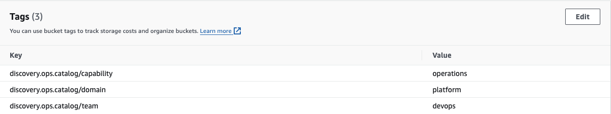

Resources
Resources can be discovered from a whole lot of targets like Object Store, Databases, Kafka etc. We share the configuration for each type of discovery below:
AWS Resources
Here is a configuration to retrieve buckets from S3.
apiVersion: "v1"
kind: Discovery
metadata:
name: "aws-discovery"
type: aws
instance:
- name: "s3-1"
filter:
excludes: [".*"]
includes: ["spark.*", "gpg.*", ".*biller", "aws-sts.*"]
resources: ["s3"]
includes:
- internal
- data-platform
classification:
team: "datahoarders"
domain: "storage"
capability: "dataretention"
businessUnit: "tech"
options:
host: "s3.ap-southeast-2.amazonaws.com"
port: "443"
username: "file:./tmp/access_key"
password: "file:./tmp/secret_key"
region: "ap-southeast-2"
ssl: "true"
This is just like any discovery config, the only difference is the region information. Discovery annotations can be retrieved from storage resources like S3 buckets.

The other supported resource types in AWS are EKS (via Kubernetes Discovery), Lambda, SNS Topics and SQS Queues.
Airflow Dags
Airflow Dags discovery requires airflow instance to have REST API enabled.
apiVersion: "v1"
kind: Discovery
metadata:
name: "airflow-discovery"
type: airflow
instance:
- name: "airflow-1"
includes:
- internal
options:
host: "airflow.ops-catalog.io"
port: "8280"
username: "admin"
password: "file:./tmp/airflow"
ssl: "false"
classification:
team: "dataplatform"
domain: "jobs"
capability: "jobs"
businessUnit: "tech"
Kafka Topics
Here is a config for Kafka discovery
apiVersion: "v1"
kind: Discovery
metadata:
name: "kafka-discovery"
type: kafka
instance:
- name: "kafka-1"
includes:
- internal
options:
host: "kafka.ops-catalog.io"
port: "9092"
ssl: "false"
classification:
team: "keepers"
domain: "storage"
capability: "operations"
businessUnit: "tech"
Postgres Schema
Similarly, a postgres example is presented here
apiVersion: "v1"
kind: Discovery
metadata:
name: "pg-discovery"
type: postgres
instance:
- name: "pg-1"
includes:
- internal
classification:
team: "datahoarders"
domain: "storage"
type: "Schema"
capability: "dataretention"
businessUnit: "tech"
options:
host: "postgres.ops-catalog.io"
port: "5432"
username: "postgres"
password: "file:./tmp/pgpassword"
ssl: "false"
database: "servicing"
- name: "pg-2"
options:
host: "postgres.ops-catalog.io"
port: "5432"
username: "postgres"
password: "file:./tmp/pgpassword"
ssl: "false"
database: "preferences"
Schema level overrides can be applied in the form of Postgres Schema comments.
Example comment:
COMMENT ON
SCHEMA refdata IS '{
"discovery.ops.catalog/skip": "false",
"discovery.ops.catalog/team": "notifiers",
"discovery.ops.catalog/domain": "jobs",
"discovery.ops.catalog/capability": "datamart",
"discovery.ops.catalog/includes": "data-stuff,internal"
}';
Cassandra Keyspaces
Cassandra Keyspace discovery config is very similar to other discovery types.
apiVersion: "v1"
kind: Discovery
metadata:
name: "cassandra-discovery"
type: cassandra
instance:
- name: "cassandra-1"
options:
host: "cassandra.ops-catalog.io"
port: "9042"
username: "cassandra"
password: "file:./tmp/casspassword"
ssl: "false"
includes:
- internal
classification:
team: "datahoarders"
domain: "storage"
type: "Keyspace"
capability: "dataretention"
businessUnit: "tech"
It is not possible to add comment to Cassandra Keyspace. Hence we look for a table called catalog and read its comment if available to perform item level override.
CREATE TABLE catalog (
ID text primary key,
CONTENT BLOB
) WITH
comment = '{
"discovery.ops.catalog/skip": "false",
"discovery.ops.catalog/team": "account",
"discovery.ops.catalog/domain": "onboarding",
"discovery.ops.catalog/capability": "onboarding",
"discovery.ops.catalog/includes": "onboarding-stuff,internal"
}';
Git Repositories
Given that a Repository source is an attribute contained by a Catalog Item representing an app, it is possible that you want to only include select git projects as catalog item (ones which are used by GitOps).
apiVersion: "v1"
kind: Discovery
metadata:
name: "github"
type: git
instance:
- name: "personal-github"
includes:
- internal
filter:
includes: [".*by-example", ".*playground"]
options:
host: "api.github.com"
port: "443"
username: "file:./tmp/githubusername"
password: "file:./tmp/githubpassword"
ssl: "true"
classification:
team: "devexp"
domain: "platform"
capability: "operations"
businessUnit: "tech"
duplicatesStrategy: "ignore"
- name: "org-github"
includes:
- internal
filter:
excludes: [".*"]
includes: [".*examples", ".*specification"]
options:
host: "api.github.com"
port: "443"
username: "file:./tmp/githubusername"
password: "file:./tmp/githubpassword"
ssl: "true"
org: "ops-catalog"
use-hints: "false"
classification:
team: "devexp"
domain: "platform"
capability: "operations"
businessUnit: "tech"
duplicatesStrategy: "ignore"
For the second github instance, we are choosing not to look for enrichment data in a special tag as we provide the attribute use-hints: "false"
It is also possible to store all Git Repositories in Ops Catalog. A recommended setup is to run separate instance of OpsCatalog for the purpose of Discovering and Provisioning all Git repositories for your organisation.
Further enrichment hints can be provided to Git Discovery module by creating a "tag" by the name "catalog".